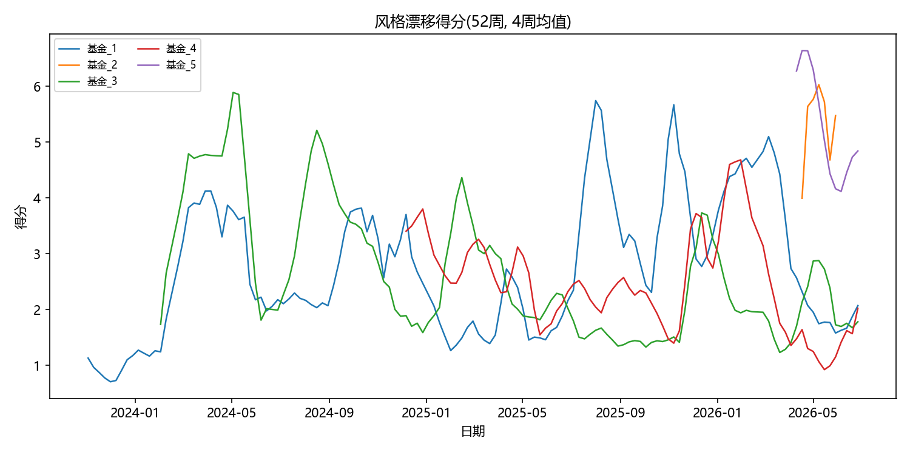
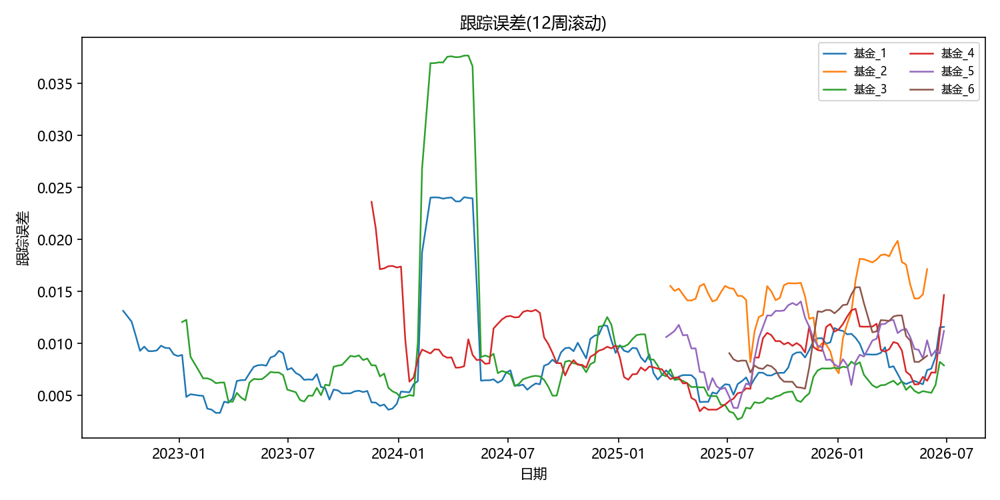
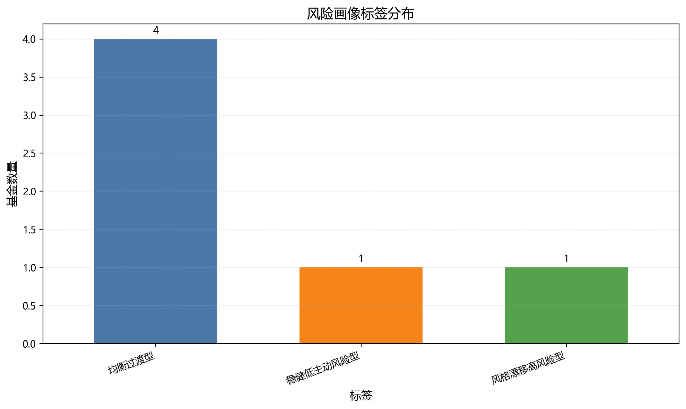

基于Barra因子敏感度的中证1000指数增强基金风险画像与风险预警研究
一、研究背景与目标
本项目面向基金风险研究场景，基于基金净值、中证1000指数与Barra因子序列，完成从风险暴露估计到未来风险预警的完整流程。
研究目标不是预测“哪只基金收益最高”，而是识别“哪只基金未来风险可能升高”。
核心目标如下：
- 估计基金对Barra因子的动态敏感度。
- 构建基金风险画像，识别风格稳定性与主动风险特征。
- 构建未来4周风险标签，检验风险预警可行性。
- 使用轻量机器学习模型（Logistic/LASSO Logistic）与树模型（LightGBM/XGBoost）进行风险状态预测。
二、数据与样本说明
数据来源：
- 6只中证1000指数增强基金净值数据（周频为主，个别基金原始为日频后转周频）。
- 中证1000指数周线数据。
- Barra风格因子数据（先由因子水平序列转换为周收益）。
样本与对齐后规模：
- 基础面板（step2）：
744 行，20 列。
- 覆盖时间：
2022-07-15 至 2026-06-26。
- 基金数量：
6 只。
说明：本项目使用非平衡面板，不强制所有基金样本长度一致。
三、方法流程与实现步骤
Step1 数据读取
读取Barra原始数据、指数数据、基金净值数据。
Step2 清洗与对齐
- 基金复权净值转周收益率。
- 指数收盘价转周收益率。
- Barra因子水平转周收益率。
- 按“基金-日期”构建非平衡面板，生成：
基金收益率指数收益率超额收益- 各Barra因子周收益
Step3 基础风险指标
按基金滚动12周计算：
跟踪误差_12周信息比率_12周最大回撤_12周胜率_12周
有效样本数（每项）：678（前11周窗口不足为缺失值，属正常现象）。
Step4 滚动Barra回归（核心）
滚动窗口：12周。
模型形式：
[
超额收益 = 截距 + 各因子暴露 \times 因子收益 + 残差
]
当前采用核心5因子（稳健版本）：
输出：
超额收益截距_12周拟合优度_12周残差波动_12周- 各核心因子暴露（12周）
说明：仅使用5因子是因为12周窗口下若因子过多，会导致自由度不足、系数不稳定、解释性下降。
Step5 风格漂移得分
对每个因子暴露计算相对52周滚动均值偏离：
[
漂移幅度 = |当前暴露 - 52周滚动均值|
]
再对多个因子漂移幅度求和，得到：
风格漂移得分_52周风格漂移得分_52周_4周均值（短期平滑）
Step6 基金风险画像
按基金聚合后，构建：
- Barra敏感度等级（高/中/低）
- 风格稳定性等级（稳定/中等/不稳定）
- 主动风险等级（高/中/低）
- 风险画像标签
Step7 未来风险标签（前瞻4周）
构建以下目标变量：
未来高跟踪误差标签_4周未来回撤风险标签_4周未来高残差波动标签_4周
标签口径：
- 跟踪误差、残差波动：按基金自身历史75%分位数阈值。
- 回撤风险：未来4周最大回撤 < -3% 记为1。
Step8 机器学习预警
目标：预测 未来高跟踪误差标签_4周。
模型：
- Logistic Regression
- LASSO Logistic Regression（变量筛选）
- LightGBM（非线性树模型）
- XGBoost（梯度提升树模型）
切分：按时间切分训练/测试，避免未来数据泄露。
Step9 可视化与总览导出
已导出：
- 风格漂移曲线
- 跟踪误差曲线
- 风险画像标签分布图
- 项目总览工作簿与摘要文件
四、核心结果与解读
4.1 基金风险画像结果（step6）
| 基金 |
Barra敏感度等级 |
风格稳定性等级 |
主动风险等级 |
风险画像标签 |
| 基金_1 |
低 |
中等 |
中 |
均衡过渡型 |
| 基金_2 |
高 |
不稳定 |
高 |
风格漂移高风险型 |
| 基金_3 |
低 |
稳定 |
低 |
稳健低主动风险型 |
| 基金_4 |
中 |
稳定 |
高 |
均衡过渡型 |
| 基金_5 |
中 |
不稳定 |
中 |
均衡过渡型 |
| 基金_6 |
高 |
中等 |
低 |
均衡过渡型 |
解读：
基金_2 同时出现高敏感度+不稳定+高主动风险，属于重点监控对象。基金_3 风格稳定且主动风险低，呈现稳健特征。- 其余基金处于中间状态，建议结合时间维度持续跟踪。
4.2 未来风险标签分布（step7）
平均标签占比：
未来高跟踪误差标签_4周：约 25.14%未来回撤风险标签_4周：约 33.47%未来高残差波动标签_4周：约 25.15%
解读：
- 风险事件占比不算极端稀少，具备分类建模基础。
- 回撤风险占比相对更高，说明下行风险在样本期内较为值得关注。
4.3 机器学习预警结果（step8）
| 模型 |
分类阈值 |
AUC |
PR_AUC |
Recall |
Precision |
F1 |
Accuracy |
| Logistic |
0.200 |
0.5102 |
0.3046 |
0.8780 |
0.3529 |
0.5035 |
0.4453 |
| LASSO Logistic |
0.350 |
0.4976 |
0.2991 |
0.7561 |
0.3827 |
0.5082 |
0.5312 |
| LightGBM |
0.640 |
0.5038 |
0.3380 |
0.0488 |
0.3333 |
0.0851 |
0.6641 |
| XGBoost |
0.430 |
0.5130 |
0.3091 |
0.0244 |
0.0769 |
0.0370 |
0.5938 |
LASSO筛选出的关键特征（11个）：
- 因子暴露_规模_12周
- 因子暴露_动量_12周
- 因子暴露_流动性_12周
- 因子暴露_波动率_12周
- 因子暴露_账面市值比_12周
- 超额收益截距_12周
- 残差波动_12周
- 信息比率_12周
- 最大回撤_12周
- 胜率_12周
- 风格漂移得分_52周_4周均值
解读：
- 线性模型（Logistic、LASSO）在本轮实验中Recall与F1明显优于树模型，更适合“宁可多报”的预警场景。
- 树模型（LightGBM、XGBoost）当前阈值下偏保守，误报少但漏报较多，需进一步调参和阈值策略优化。
- 四个模型AUC整体接近0.5，说明当前样本与特征下区分度仍偏弱，暂定位为研究辅助工具。
五、项目中“机器学习”的体现
本项目的机器学习部分体现在Step8：
- 使用监督学习框架预测未来风险状态（二分类）。
- 采用时间切分训练/测试，符合时序建模规范。
- 在保留Logistic与LASSO的基础上，引入LightGBM与XGBoost进行非线性对照建模。
- 使用验证集进行阈值优化，再在测试集统一输出AUC、PR_AUC、Recall、Precision、F1、混淆矩阵，形成完整评估闭环。
六、局限性与后续优化方向
- 样本规模较小、基金数量有限，模型泛化能力受限。
- 12周窗口下为保证稳健性，核心回归仅选5个因子；其余因子可在后续稳健性分析中扩展。
- 目前预警目标以“未来高跟踪误差”为主，后续可增加多目标联合预警。
- 可考虑加入阈值优化、滚动重训练、类别不平衡处理等提升预测表现。
七、结论
本项目已完成“风险识别 -> 风格漂移监控 -> 未来风险预警”的完整流程：
- 成功估计6只基金的动态Barra因子暴露。
- 构建了可解释的基金风险画像体系，并识别出重点风险对象。
- 构建未来4周风险标签并完成Logistic、LASSO、LightGBM、XGBoost预警建模。
- 结果表明线性模型在当前数据上更稳健，树模型仍有优化空间，后续需通过样本扩充与特征增强继续提升。
整体上，本研究较好匹配基金风险研究岗位对“解释性、监控性、可落地性”的要求。
八、关键图表附录
图A：风格漂移得分（52周，4周均值）

图A解读：
- 该图反映各基金风格暴露相对自身长期均值（52周）的偏离程度，数值越高表示风格漂移越明显。
基金_1 与 基金_3 在样本期内出现过多次抬升区间，说明其风格稳定性阶段性走弱，应结合市场环境进行重点复核。 基金_2、基金_5 在样本后段出现较高点位，提示近期投资风格可能发生了较明显调整。 - 从风险监控角度，可将该指标作为“风格稳定性预警”信号，与跟踪误差、回撤等指标联合判断。
图B：跟踪误差（12周滚动）

图B解读：
- 该图展示各基金相对中证1000基准的主动偏离强度，跟踪误差越高，代表组合与基准差异越大。
基金_3 在2024年初附近出现阶段性高位，表明当期主动风险暴露显著上升。 - 样本后段多数基金维持在较低至中等区间，说明整体偏离强度可控，但
基金_2等个别产品仍有上行波动，需要持续跟踪。
- 在预警应用中，可将“跟踪误差上行 + 风格漂移抬升”作为联合触发条件，用于识别潜在风险抬头阶段。
图C：风险画像标签分布

由项目报告Markdown自动转换生成